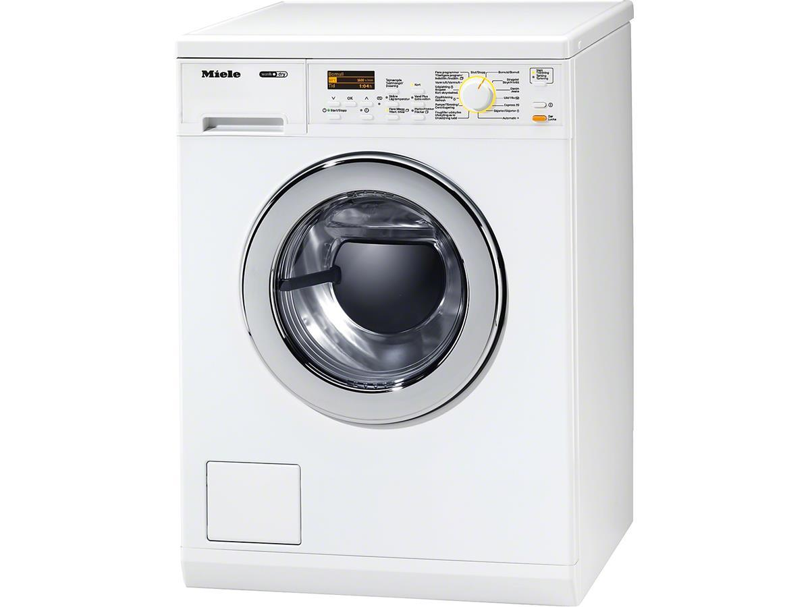

Miele vask/tørk WT 2796 WPM 6KG
Energiklasse A, Lotushvit, 1.600RPM, Damp, Skånetrommel

Mieles vask/tørk-kombinasjon kombinerer funksjonene til en vaskemaskin og en tørketrommel i en maskin. Dermed kan du vaske 6 kg og deretter tørke 3 kg tøy uten å flytte tøyet til en annen maskin.
Og når det haster kan det gjøres på 90 minutter. Perfekt hvis du har liten plass, eller bare vil montere en maskin. Maskinen er utstyr med et oversiktlig display, for enkel betjening, startforvalg inntil 24 timer og resttidsanvisning.
Du kan behandle opptil 22 flekktyper individuelt med vår flekktast. For å unngå nupper og uttrukne tråder er den dessuten utstyrt med Mieles patenterte skånetrommel mens funksjonene dampglatting og skjorter sørger for å glatte ut tøyet ved hjelp av damp.